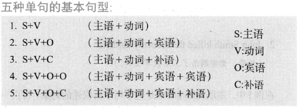
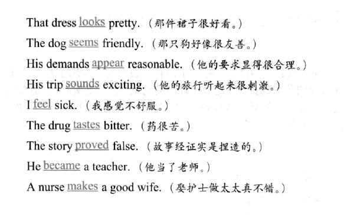
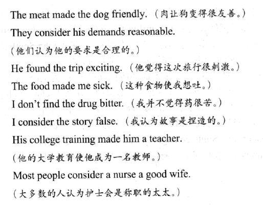
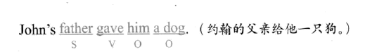
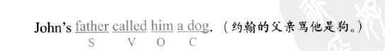

English grammer
文章目录
How to Learn English grammer ? —《英语魔法师之语法俱乐部》
享受阅读的第一步——不求甚解。这种方法不需要外在有英语环境，只要找来适合自己程度的英语文章，由浅入深阅读下去，常见英语单词和语法句型自然会大量出现，从上下文中就可以学到新的单词与用法，不需借助词典。冷僻的单词去查也没有用——因为不是常常看得到，查了也背不下来。更重要的是，摆脱了词典的累赘，你就会发现阅读的乐趣，让你爱读的文章来牵引，不必有丝毫勉强，自然能持续下去，每天都有进步。
Table Of Contents
该书采用循序渐进的方式，第一篇先介绍简单句，从基本句型切入。充分了解简单句，就得对它的各个部分都能掌握，包括做主语的名词，包括动词（这会牵涉到时态和语气），包括修饰语（形容词和副词）等等，所以第一篇中继基本句型之后即进入这些词类耳朵研究，第一篇还有对不定词词组、动名词与分词的探讨。这个部分是打基础的工作，为后面的简化从句预做准备。
第二篇讨论的是复句与合句。只要简单句能够掌握，那么复句或合句只是把两个以上的简单句运用连接词结合起来。所以，在进入第二篇之前，一定要先把第一篇熟读、充分理解。征服了复句、合句，就有能力看懂比较复杂的句子，下笔时也可以有变化，不再是通篇简单句，开始能展现出比较成熟的英语风格。
第三篇的简化从句又得建立在第二篇复句、合句的基础上。简化从句是返璞归真的高级句型。一句话中分析起来可能会发现有五、六个句子藏在里面，若还原成复句、合句的话会是很长、很啰嗦的句子。经过简化之后，整个句子短小精致，看来像个简单句，可是浓缩了五六句的意思在里面。这种精炼的句子是最后一道关卡。
万丈高楼平地起。读者看本书一定要循序渐进，不要急。从初级的简单句，经过中级的复句、合句，再来到高级的简化从句，每一个章节都要去思考、理解——不必记忆。完全看懂了一章之后才进入下一章。这样就能建立起最有效的语法句型观念，克服读、写的语法句型障碍。
Simple Sentences
A 基本句型及补语

基本句型分五种，是因为有五种特性不同的动词而造成的。而有补语的句子，在传统语法中确实没有被讲清楚。在所有的英语动词中，只有解释为“是”得动词是空的，完全没有意义。也只有这种动词才需要补语来补足句子的意思。
一个完整的句子，必须能够表达完整的意思。这需要两个部分来完成：主语 和 动词。主语，是这个句子所叙述的对象。动词，构成叙述的主要内容。
John Smith died
John Smith 是这个句子所叙述的对象。这个句子要告诉你的是 John Smith 的事情。什么事情？他死了 (died)。动词 died 构成叙述的主要内容。至于说死于一战还是二战，则是可有可无的细节。我们可以用介词短语，依附在动词上做修饰语使用。
John Smith died in World War Two.
die ：动作，可独立发生，不牵涉别的人或物，叫“不及物”动词。
John Smith killed three enemy soldiers
kill ：动作，必须发生在另一个对象身上，及物动词 后面通常必须跟着一个宾语来接受这个动作。 killed 就是及物动词，而 three enemy soldires 就是宾语。
主语、动词、宾语都有了，我们就差补语了！ killed 虽然需要宾语，可是句子最主要的内容还是在主语、动词这两个部分。主语部分高速我们这个句子要叙述有关 John Smith 的事情，动词部分叙述他做了一个杀的动作。如果只说 John Smith killed，这个句子没有表达出完整的意思，是不好的句子。但并非完全没有意义。至少我们可以看出来， 有一个叫 John Smith 的人杀了个不晓得是什么的东西。
但反之，如果句子缺少了补语，就会变得完全没有意义，因为叙述的部分完全缺乏。请注意：在所有的英语动词中，只有解释为是的动词是空的，完全没有意义。一般动词，不论及物不及物，都要担任叙述全句最主要内容的工作。只有解释为 “是” 的动词，没有叙述能力，只能扮演引导叙述部分的角色。
John Simth was a soldier.
动词 was 就和前面的例子不一样，这个动词并没有告诉我们有关 John Smith 这个人的任何事情。叙述主要内容的工作落在后面的 a soldier 之上。动词 was 只是把 John Smith 和 a soldier 之间画上等号、串联起来而已。
John Smith was courageous.
在中文里，如果 Be 动词后面跟的是形容词，动词的 “是” 会被丢掉。解释为 “是” 的动词没有叙述能力，只能把主语和后面构成叙述的部分连接起来，所以它又叫做 Linking Verb 。跟在这种动词后面的部分，因为替代了动词所扮演的叙述角色，补足句子使它获得完整的意思，称之为 Complement （补语）。
Part 1：需要补语的动词有哪些
| 单词 | |
|---|---|
| look | 看起来是 |
| seem | 似乎是 |
| appear | 显得是 |
| sound | 听起来是 |
| feel | 摸起来是 |
| taste | 单元尝起来格 |
| trun | 转变为 |
| prove | 证实为 |
| become | 成为 |
| make | 做为 |

现在我们把以上句子里的动词全部替换成 be 动词，有没有发觉，这些句子的意思和句型，都没有太大的改变？这就是 “主语+动词+补语（S+V+C）” 的句型。凡是动词解释为各式各样的 “是” 的句子，都属于这种句型。
Part 2：宾语补语的句型

Part 3：补语的词类
补语的词类，应该是名词和形容词比较合理。因为主语或宾语都是名词，所以补语也可以是名词。John Smith was a soldier。又主语和宾语都可以是名词，而修饰名词的修饰语就是形容词，因而可以经由动词 “是” 的引导来修饰主语 John Smith 是怎样的人。
Part 4：没有补语的 be 动词
语境翻译
I think;therefore I am 我思故我在
To be or not to be ,that is the question
Part 5：有2个宾语的句型
最后谈谈 S+V+O+O 的句型，那么五种基本句型就全部清楚了。

想一想 gave 这个动词。要做给的动作，首先要有个东西；在上述中就是那只狗。然后，还得有人接受，才能给得出去；在上例中就是 him 。这两个宾语，一个是给的对象，一个是给得东西，两个都是名词，可是并不相等。

如果两个名词相等，则 S+V+O+C 的句型。
B 名词短语与冠词
英语是一种拼音文字，和其他拼音文字一样，用词尾的变化来表示单、复数。不仅如此，在名词短语的开头，还有一些符号来配合标示该名词的范围，这种符号在语言学上称为“限定词”。